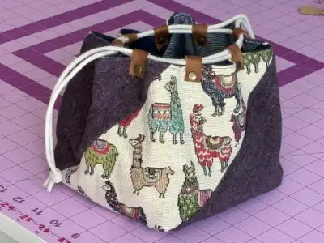

All About Capital City Sewing Club
We are a culturally diverse group of woman with a common interest in sewing.
What Are We Working On Now?
Hexie Flower Hot Pad
This Japanese style pouch pattern comes in three different sizes.
Diagonal Box Pouch
This Japanese style pouch pattern comes in three different sizes.